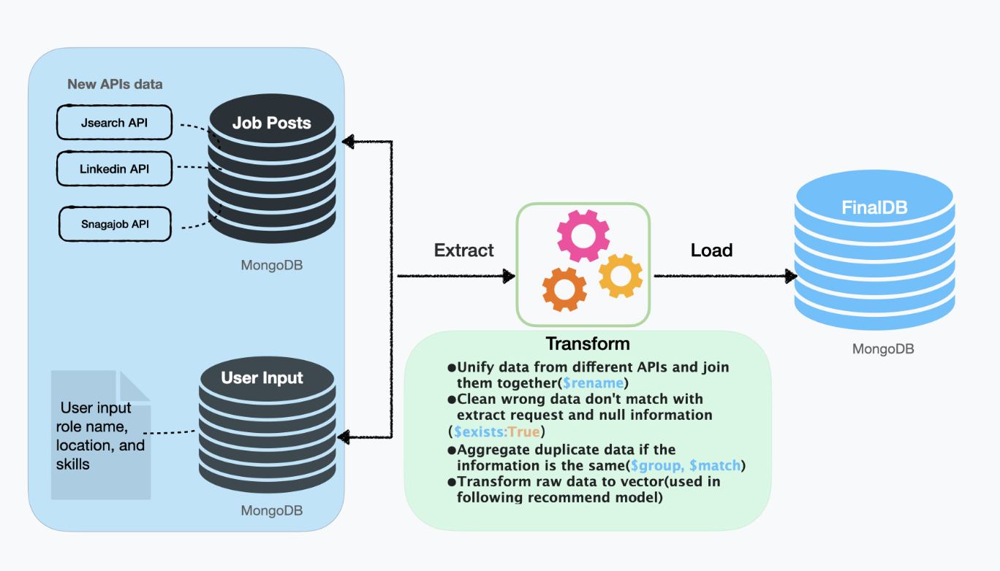
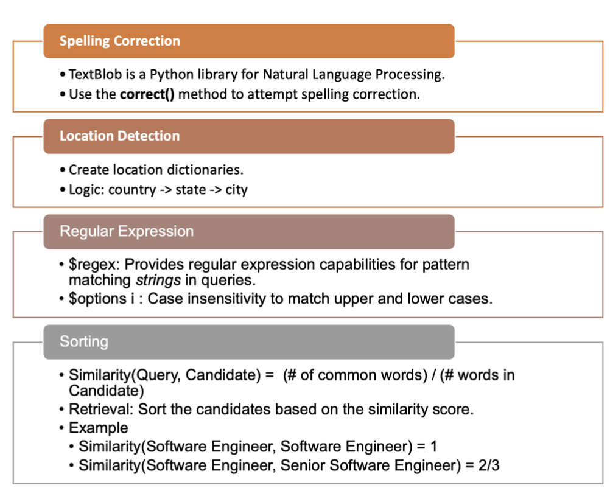
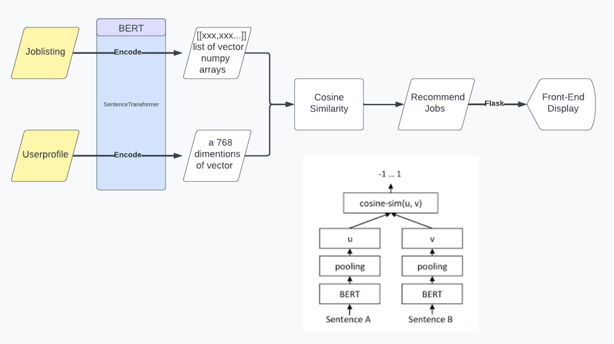
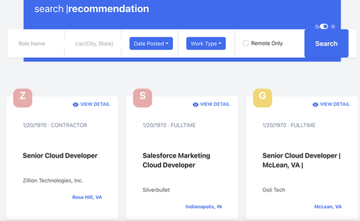

..
Job search Website
Intro
- Scrapped 1000+ data from LinkedIn, Glassdoor, etc in Python using Scrapy and built ETL using Apache Airflow to integrate data daily
- Implemented recommendations by scores and locations utilizing SparkDF, SparkSQL, and Haversine lib
- Implemented recommendations by users’ information using sentence transformer, Bert and SparkMLlib
- Integrated real-time recommendation using Kafka to transfer data to SparkStreaming and save to Redis
- Designed front-end user interface and data visualization interface in JavaScript using React, Flask, and Echarts
- Realized fuzzy search using textblib lib, regular expression, and sorting by similarity
ETL

Job-Search

Job Recommend

Front-End
